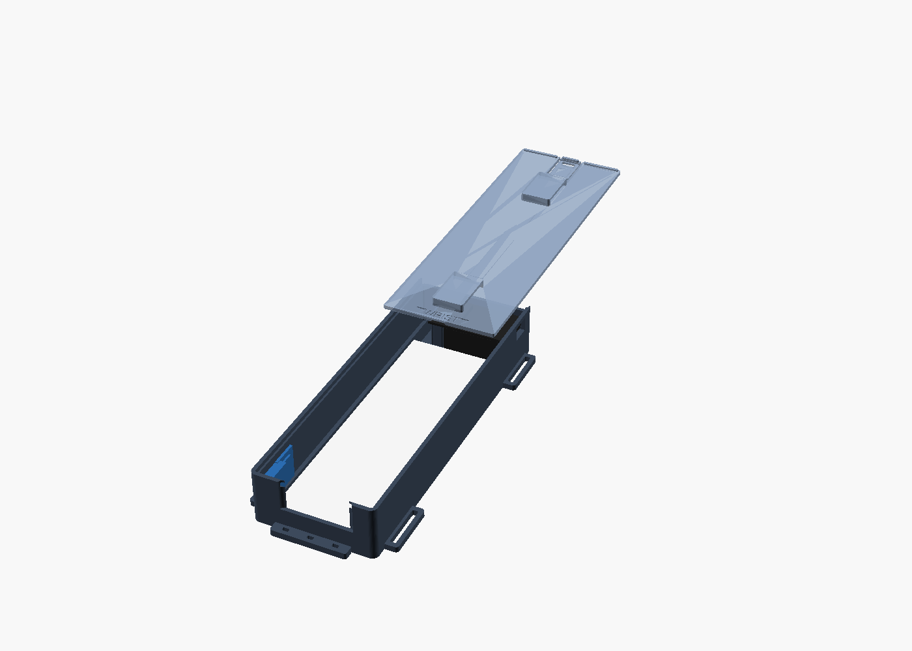
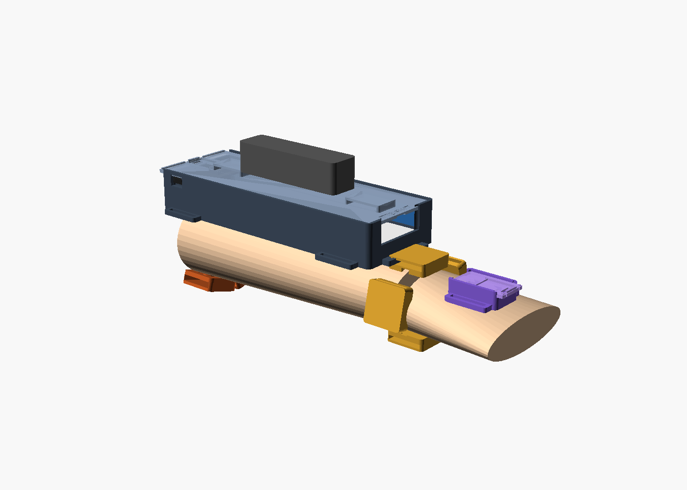
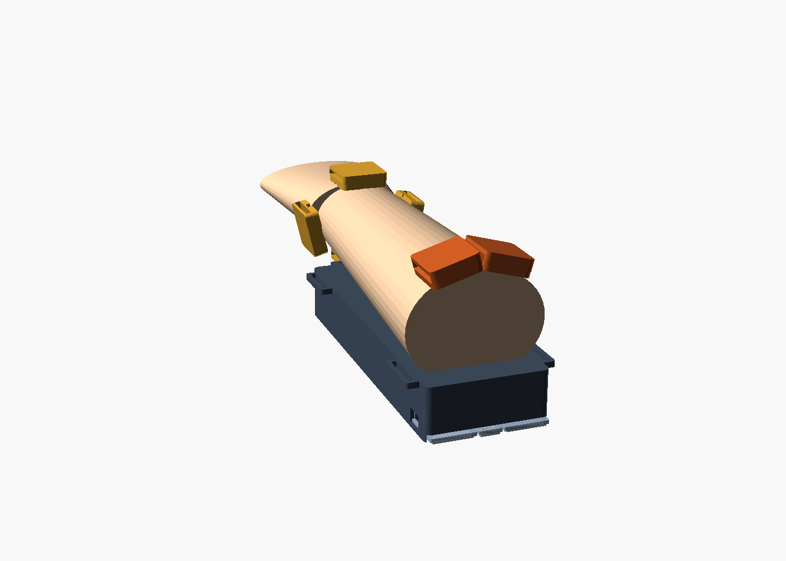

WristTap v2: the band you can wear
Every part now lives inside a printed shell. Nothing dangles, the lids slide open for fixes, and with a power bank on top the band talks to the Mac over Bluetooth or Wi-Fi. No soldering needed.


1. Every component and where it goes
| Component | Qty | Goes in | Notes |
|---|---|---|---|
| ESP32 DevKit (30 pin) | 1 | Forearm box, elbow end, raised on two rests | Pins point down, jumper plugs hang under it. USB port faces the side hole (power-bank cable). |
| Breadboard, 17 × 6 cm (your two joined boards) | 1 | Forearm box, floor pocket, wrist end to middle | Keep all the wiring exactly as it is. Lift the whole board out and drop it in. Foam tape under it; if there's play, a strip of foam along one side. |
| MPU6050 #1 | 1 | Forearm box, standing on edge in the side channel at the wrist end | Foam tape on its back, onto the wall, plugs pointing to the wrist. Closest to the hand, so it also feels finger taps. |
| MPU6050 #2 | 1 | Hand shell, back of the hand | Lies flat on the two rails, tape underneath, ribbon out the wrist end. Measures the hand. MPU #2 minus MPU #1 = wrist bend. |
| Piezo discs | 4 | 4 piezo pods on the wrist strap (exact spots in section 3) | Brass side faces the skin. A small loop of tape on the rim holds each disc in its seat. Wires run along the groove. |
| FSR 402 | 2 | 2 FSR pods on the elbow-end box strap, inner forearm | Pad faces the skin, tail runs out of the channel. Gripping or pinching bulges the forearm muscles = squeeze signal. |
| Resistors 10 kΩ ×6, 1 MΩ ×4 | 10 | On the breadboard, exactly where they are now | Nothing changes. |
| Power bank (small, USB) | 1 | On top of the box lid, held by a strap through the 2 tunnels | Short micro-USB cable into the side hole. Or keep it in a pocket with a longer cable. |
| Velcro / elastic straps 25 mm | 4 | Wrist (pods) · forearm (box + FSR pods) · hand (shell) · power bank | You have 2. For the other 2, use velcro cable ties, elastic + safety pin, or hair ties for the power bank. |
| Small zip ties | 2–3 | Lug outside the wrist end of the box | Tie the wire bundle to the lug so a tug never pulls a wire out of the breadboard. |
Inside the forearm box (top view)
Sizes
| Part | Outside size (mm) | |
|---|---|---|
| Forearm box + lid | 75 × 208 × 38 (with tunnels) | All on one plate: 4 h 43 min, 171 g PLA, no supportscad/print/v2_all_parts.3mfBox + lid only: 3 h 26 min, v2_box_and_lid_17cm.3mf |
| Hand shell + lid | 27 × 40 × 13 | |
| Piezo pod ×4 | 31 × 31 × 9.5 | |
| FSR pod ×2 | 23 × 31 × 8 | |
| Fit test (optional, first) | 118 × 70 |
2. Print
- Optional, 28 min: open
cad/print/v2_fit_test.3mfin Bambu Studio → Print. Check: disc drops in, FSR pad drops in, MPU drops in, strap slides through the slot, ESP32 drops between the two posts. If anything is tight, tell me and I'll raise the tolerance (1 minute). - Open
cad/print/v2_all_parts.3mf→ Print. All 10 parts, no supports. - While it prints: do section 4 (one breadboard) and test with
./check.sh.
cad/config.scad): breadboard 170 × 60 mm (yours), ESP32 51.5 × 28.3 mm, MPU 21.2 × 16.4 mm, disc 27 mm, FSR pad 18.5 mm, strap 25 mm. If one of yours is different, send me the number and I'll re-slice.3. Where everything sits on your arm (and why)


| Part | Exact spot | Why it's the best spot |
|---|---|---|
| Hand shell (MPU #2) | Back of the hand, in the middle, about 2 cm behind the knuckles. Strap round the palm. | The back of the hand moves with where you point, so this drives the air mouse. Behind the knuckles it doesn't block a fist. |
| Piezo 0 | On the little-finger wrist bone (the bump on the outside of the wrist) | Bone carries vibration best: finger taps on a table or wall show up here most strongly. |
| Piezo 1 | Inner wrist, centre, over the tendons (where you'd check a pulse, but in the middle) | The finger tendons run under it: pinches and tapping your fingers together twitch here. |
| Piezo 2 | On the thumb-side wrist bone | Picks up thumb taps. With piezo 0 it tells thumb-side taps from little-finger-side taps. |
| Piezo 3 | Top of the wrist, centre | Feels the back-of-hand tendons: finger lifts and flicks, and taps on the back of the hand. |
| Wrist strap | Just below the wrist bones, towards the hand, firm but comfortable | Discs must press on skin and bone. Loose = weak taps. |
| Forearm box (MPU #1 inside) | Top of the forearm, wrist end 1.5 cm behind the wrist strap | MPU #1 sits at the box's wrist end: steady forearm angle for the 3D view and the wrist-bend angle, and close enough to feel taps. |
| FSR 0 + FSR 1 | Inner forearm, on the elbow-end box strap, side by side about 3 cm apart | That's the thick part of the finger muscles. Gripping or pinching bulges them = squeeze. Two pads tell a strong grip from a light pinch. |
| Power bank | On the lid, strap through both tunnels | Keeps the cable short and nothing hanging. A pocket with a longer cable also works. |
Putting it on
- Box: two straps go under the box through the 4 side slots. Thread the 2 FSR pods onto the elbow-end strap so they sit on the inner forearm.
- Wrist strap: thread the 4 piezo pods on (strap goes through the tunnel on each pod's back) in the order little-finger bone → inner wrist → thumb bone → top. Brass faces the skin.
- Hand shell: strap round the palm through the two side slots, ribbon pointing to the wrist.
- Route all wires to the box's wrist-end notch, zip-tie them to the lug, slide the lid in from the elbow end until it clicks. To open: lift the little tongue and slide.
4. Breadboard: no rewiring
Your board is 17 × 6 cm, and the box is now built for that size, so the wiring stays exactly as it is. Unplug USB, lift the board out with all its wires, drop it into the pocket, and put MPU #1 in the side channel at the wrist end. Then plug USB back in and run ./check.sh: both IMUs should read about 1 g and every disc should respond to a tap.
5. Wireless
Bluetooth tested: 100 packets/s, 0 dropped
./check.sh --ble # live numbers ./demo.sh --ble # the demo
Plug the power bank into the ESP32, wait 5 s, run it. The Mac finds the band named "WristTap" by itself.
Wi-Fi flashed, not tested yet
Right now the band makes its own network: WristTap, password wristtap1. Join it from the Mac's Wi-Fi menu (no internet while joined), then:
./check.sh --wifi # expect about 500 packets/s ./demo.sh --wifi
To use your home or college Wi-Fi instead (keeps the Mac's internet): copy firmware/wristtap/secrets.example.h to secrets.h, type the network name and password, then run ./flash.sh. Campus networks with a login page won't work; a phone hotspot will.
6. The demo
./demo.sh --ble
Safari opens localhost:8791 and shows:
- Arm, live: 3D forearm and hand that copy yours, plus the wrist-bend angle.
- Gestures: tap and double tap (shows which disc), squeeze (FSRs), flick up/down/left/right, roll left/right.
- Air mouse: press the button and point your hand to move the cursor. Tapping a disc clicks. Your trackpad keeps working the whole time. If the cursor moves the wrong way, use the axis menus or the flip buttons. The first time, macOS asks to allow your terminal under Accessibility.
Demo-day checklist
- Charge the power bank tonight.
- Rehearse: put the band on, run
./demo.sh --ble, set the air-mouse axes, and set the tap threshold so ordinary hand movement doesn't count as a tap. - Pack a spare: the USB cable. If Bluetooth acts up, plug in and run
./demo.sh. Same demo. - Keep the demo order short: arm copies you → tap each disc → squeeze → flick → air mouse opening a file.